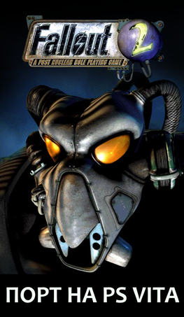

Fallout 2

ЖАНР: RPG
РОЗРОБНИК: Black Isle Studios
ЛОКАЛІЗАЦІЯ: Fallout 2 UA(Danil_linaD)
ІНСТРУКЦІЯ:
Так, цей переклад також працюватиме і для версії на консолі PS Vita.
Спочатку скачайте та встановіть VPK з VitaDB. Далі вам треба скачати всього лише master.dat та закинути його в папку з грой на пк.
Потім скопіюйте з вашої гри на пк master.dat, critter.dat, папки data та sound на консоль в ux0:data/fallout2/. Після цього вам треба видалити усі наявні файли patchXXX.dat в цій папці (де XXX – будь-який номер).
Також переконайтесь, що у файлі fallout2.cfg виставлено праильний параметр мови. Повинно бути "language=english".
ПОСИЛАННЯ:
Скачати файлиСкачати VPK з VitaDB
Сайт проєкту